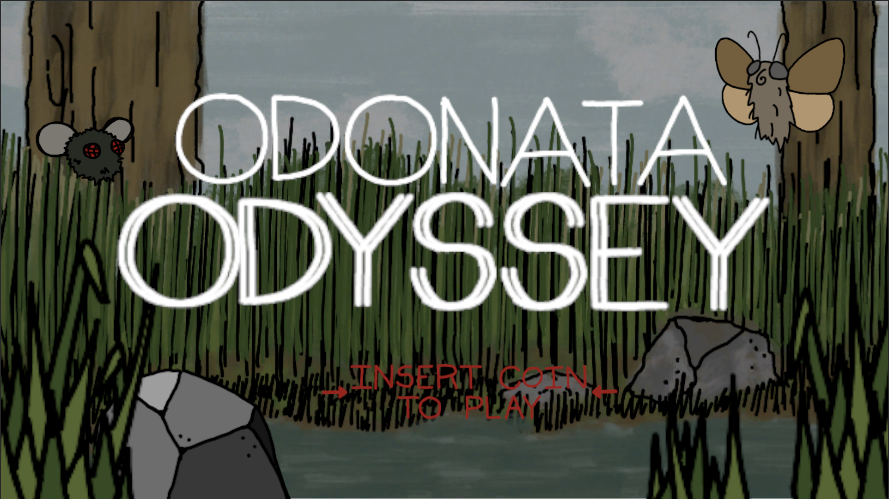
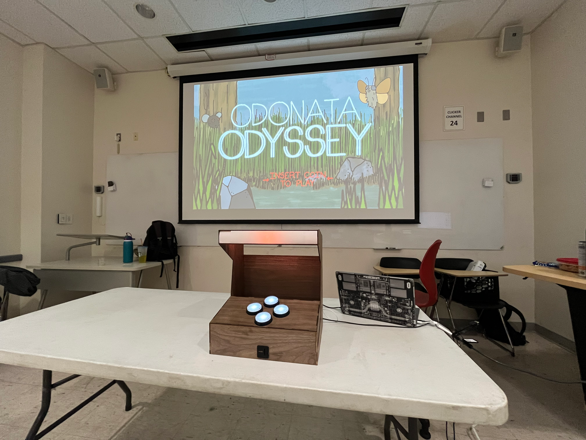
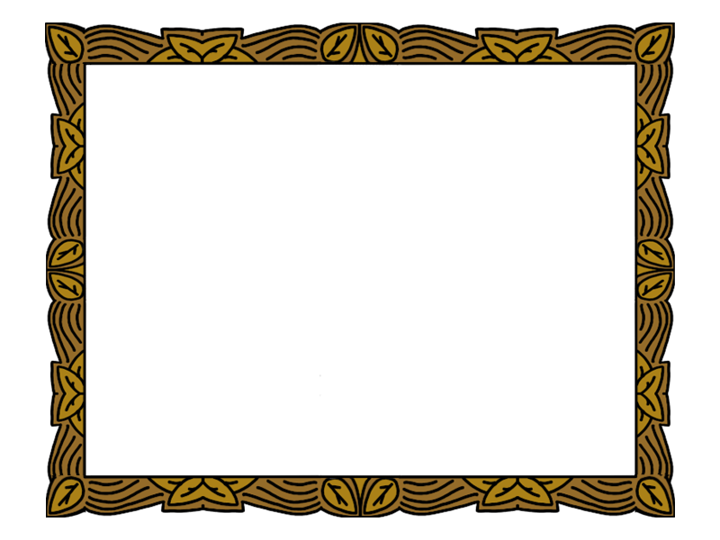

Overview
Odonata Odyssey is a side-scrolling educational arcade game centered on the lifecycle, behavior, and ecological relationships of dragonflies. Designed with custom controls and built on Unity, the project combines interactive gameplay with authentic natural history concepts. Players embody a dragonfly navigating a wetland ecosystem- hunting, avoiding predators, and ultimately fulfilling key steps of their natural life cycle. The game blends classical sprite animation, responsive controller input, and environmental feedback to deliver an accessible and engaging experience.


Click image to view gallery
Introduction
Odonata Odyssey focuses on modeling key ecological interactions in the life of a dragonfly. The player experiences predator–prey behavior, flight patterns, and reproductive phases through mechanics that mirror real insect behavior. For example, the player hunts smaller insects for sustenance, avoids predatory birds and frogs, and ultimately seeks out a mate to complete a victory condition.
While stylized, these mechanics are rooted in real entomological concepts. Dragonflies are apex aerial predators in wetland habitats, consuming mosquitoes, midges, and other flying insects. Their population dynamics influence mosquito density and broader ecosystem balance. Odonata Odyssey translates these relationships into playful interactions, enabling players to intuitively understand dietary needs, habitat use, and food webs without written instruction.
The game structure emphasizes short, repeatable rounds ideal for public exhibits and demonstrations. Players quickly learn mechanics through feedback rather than text: capturing prey yields points, collisions with predators lead to failure states, and survival triggers a celebratory end sequence.


Click image to view gallery
Public Display
A key feature of Odonata Odyssey is its effectiveness as a public-facing educational exhibit. The project was displayed at the Maryland Day 2025 Bug Zoo event, which attracts hundreds of families annually. A custom-built arcade cabinet housed the game, constructed using CAD modeling and laser-cut components. Physical buttons and a wiring harness were integrated to create an approachable control scheme appropriate for children and family audiences.
During the exhibit, I personally guided participants through the game’s ecological concepts, like predator-prey behavior, life cycles, and insect adaptations while they played. Children's responses demonstrated strong educational engagement: within minutes, players identified dragonfly diet, survival strategies, and environmental relationships without direct instruction. Their questions ranged from hunting methods to lifespan differences, showcasing the communicative power of game-based learning.
The exhibit highlighted my personal belief in the power of interactive media as a tool for education. By blending arcade-style play with accurate ecological context, Odonata Odyssey enabled informal science learning in a format that remained accessible, playful, and memorable for a wide age range.
Takeaways
Creating Odonata Odyssey deepened my understanding of both Unity development and interpretation of educational systems in interactive media. Modeling realistic predator–prey relationships required balancing movement physics, pacing, and visual signaling, especially when working with younger audiences who benefit from clarity and immediate feedback.
The project also represented a hands-on introduction to hardware integration through the construction of the arcade cabinet. This included laser-cut structural design, electronics management with harnesses and switches, and iterative user testing to ensure accessibility for children. The cabinet proved essential for creating an inviting exhibit experience.
Most importantly, the positive reactions from visitors highlighted the educational potential of interactive systems in science communication. Odonata Odyssey demonstrated that complex ecological concepts can be conveyed effectively through play, reinforcing how game design and scientific outreach can intersect.